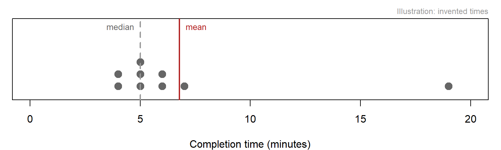
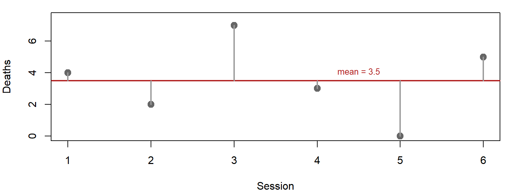
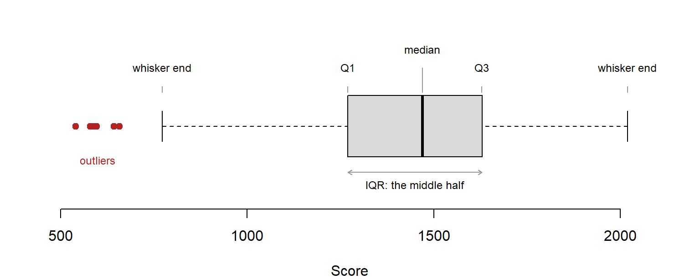
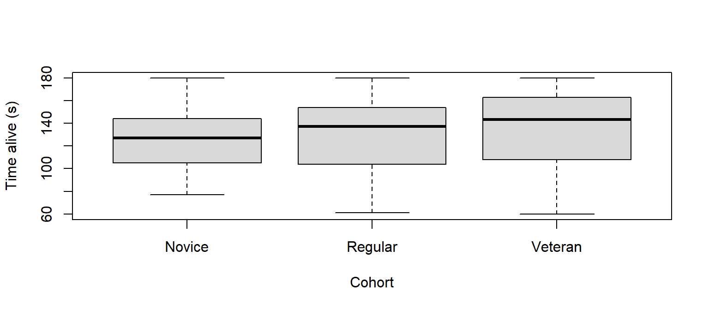

Centre, spread, and the pictures that keep them honest
Before you compare anything to anything, you have to be able to say what one variable looks like. This page gives you the vocabulary for that, centre and spread, and the three pictures that check it: the bar chart, the histogram and the boxplot. It ends with describing a variable group by group, which is where most playtest questions live. The playtest question running through it: “The Sentinel has the lowest average score. Is it underpowered?”
Stage: 1 · Core. Time: 30 minutes in class; 20 more for the sections marked Useful when needed. Before this:Data, Variables and Types. Key terms: frequency table, proportion, mode, mean, median, range, standard deviation, quartile, IQR, percentile, histogram, bin, boxplot, outlier. R you will write:count(), mutate(), group_by(), summarise(), n(), mean(), median(), sd(), IQR(), quantile(), barplot(), hist(), boxplot().
Learning Outcomes
By the end of these notes you can:
describe a categorical variable with counts, proportions and its mode, and draw it as a bar chart;
choose between the mean and the median, and read the gap between them;
describe spread with the range, IQR and standard deviation, say in words what a standard deviation measures, and say why the range is rarely enough;
read percentiles and a five-number summary;
draw and read a histogram and a boxplot, and say what each shows that a summary hides;
summarise a variable for each group with group_by() and summarise(), and compare the groups with side-by-side boxplots;
describe a variable in one sentence that gives its centre, spread, shape and size.
Why This Matters for Playtesting
A playtest file is a few thousand numbers. Nobody can read them; everybody needs to know what they say. A summary is a number that stands in for a whole column, and choosing it well is the difference between a report that helps a designer and one that misleads them.
Every summary throws information away. That is what a summary is for. The risk is that it throws away the finding, which is why every summary on this page comes with a picture that checks it (rule 4).
Describing a Categorical Variable
A categorical variable has only one kind of summary: how many of each.
A frequency table counts each category. count() builds one, and sort = TRUE puts the biggest first. A proportion is each count divided by the total; mutate() adds it as a new column:
# A tibble: 4 × 3
quit_reason n prop
<chr> <int> <dbl>
1 Completed test 69 0.58
2 Frustrated 25 0.21
3 Lost interest 21 0.17
4 Technical fault 5 0.04
Read the pipe aloud: take the sessions, count them by quit reason, and then add a column that divides each count by the total. The most common category is the mode: here, Completed test.
One proportion on its own is quicker with the trick from R from First Principles: the mean of a condition is the proportion of rows where it is true.
mean(sessions$quit_reason =="Frustrated")
[1] 0.2083333
The picture is a bar chart: one bar per category, height proportional to the count. Sort the bars by height unless the categories have their own order.
Figure 1: Most Tidebreak sessions ended with the test completed; frustration was the most common way to leave early.
In a report you would write: “25 of 120 sessions (21%) ended in a frustration quit.”
You will also seetable() and prop.table() doing the same job in older code. You do not need to write them.
Centre: the Typical Value
Three summaries claim to describe “the typical value”, and they can disagree.
The mean adds every value and divides by how many there are. It uses every value, which is its strength, and it is pulled by extreme values, which is its weakness.
The median is the middle value when the data is sorted: half the values are below it, half above. It ignores how extreme the extremes are, which is its strength and its weakness.
The mode is the most common value. It is the only centre a nominal variable has, and for a count it is often worth knowing: the most common number of deaths in a session is 4, while the median is 3.

Figure 2: Nine players’ completion times. One slow player pulls the mean up; the median does not move.
In the figure, eight players finish in 4 to 7 minutes and one takes 19. The median, 5 minutes, is a fair description of a typical player. The mean, 6.8 minutes, describes nobody: it is slower than 7 of the 9 players, pulled there by one.
When the mean and median disagree, the data is lopsided, and the gap tells you which way. If the mean sits above the median, a few large values are pulling it up. If it sits below, a few small values are pulling it down. That lopsidedness is called skew, and it is the main subject of Distributions and Shape.
Which to use. The median when the data is lopsided or has extreme values; the mean when it is roughly symmetric, or when the total matters (total damage dealt is the mean times the number of players, and the median cannot tell you that). The mode for categories, and for counts where “most common” is the question.
Spread: How Much Players Differ
The centre alone is nearly useless. Two levels with the same average completion time, one where everybody takes four minutes and one where half take one minute and half take seven, are not the same level. Spread measures how much the values differ from each other.
The range is the maximum minus the minimum. Easy to quote and nearly always misleading, because a single unusual player sets it on their own.
The standard deviation (SD) is the typical distance of a value from the mean. Small means players cluster tightly around the average; large means the average is a poor guide to any individual. It is in the same units as the data.
You do not need to calculate it by hand, but seeing it once makes the number make sense. Here it is for the six death counts from R from First Principles:
Step
Values
The data
4, 2, 7, 3, 0, 5
1. Find the mean
3.5
2. Distance of each value from the mean
0.5, -1.5, 3.5, -0.5, -3.5, 1.5
3. Square each distance, so negatives do not cancel positives
0.25, 2.25, 12.25, 0.25, 12.25, 2.25
4. Average the squares (dividing by n − 1 = 5): the variance
5.9
5. Square root, back to the original units: the SD
2.43

Figure 3: The standard deviation summarises these distances: how far, typically, each value sits from the mean.
In R it is one function:
sd(d)
[1] 2.428992
NoteThe maths, if you want it
For values \(x_1, \dots, x_n\) with mean \(\bar{x}\):
Read aloud: subtract the mean from every value, square, add them up, divide by one fewer than the number of values, take the square root. Dividing by \(n - 1\) rather than \(n\) is a small correction that makes the sample SD a better estimate of the population’s; with a few dozen players the difference is negligible.
The SD belongs to the mean. It measures distance from the mean, so it inherits the mean’s weakness: a few extreme values inflate it. For lopsided data, use the next measure instead.
Quartiles split the sorted data into four equal parts. A quarter of the values lie below the first quartile (Q1), half below the median, and three quarters below the third quartile (Q3). The interquartile range (IQR) is Q3 − Q1: the width of the middle half of your players. It ignores the extremes entirely, which makes it the most robust measure of spread you have.
Percentiles generalise this: the 90th percentile has 90% of values below it. quantile() returns any you ask for, and with no second argument it gives the five-number summary: minimum, Q1, median, Q3, maximum.
quantile(sessions$time_alive_s)
0% 25% 50% 75% 100%
60.0 105.0 133.0 155.5 180.0
IQR(sessions$time_alive_s)
[1] 50.5
quantile(sessions$time_alive_s, c(0.1, 0.9))
10% 90%
82.0 175.2
The middle half of sessions lasted between 105 and 155.5 seconds before the player died or the match ended: an IQR of 50.5 seconds.
Pair the centre with its spread. Mean with SD; median with IQR. Mixing them (“median 133, SD 33”) pairs a summary that ignores extremes with one that is inflated by them.
Seeing One Variable
The histogram
A histogram divides the range of a numeric variable into equal-width intervals, called bins, and draws a bar for how many values fall in each. It shows the whole distribution: where the bulk sits, whether it is lopsided, whether there is a second hump, whether anything sits apart from the rest.
Figure 4: Distance travelled per session. Roughly symmetric: the bulk sits in the middle and falls away evenly on both sides.
The number of bins changes what you see. Too few and a second hump merges into the first; too many and random noise looks like structure. breaks sets roughly how many bars R draws. Always try more than one; the worked example below shows what one setting can hide.
The boxplot
A boxplot compresses the distribution into five numbers and a rule for outliers. It is less detailed than a histogram for one variable, and much better for comparing several groups side by side.

Figure 5: The anatomy of a boxplot, drawn for every Tidebreak session’s score.
Part
What it shows
Thick line
The median
Box
Q1 to Q3: the middle half of the values
Whiskers
The most extreme values within 1.5 box-lengths of the box
Separate points
Outliers: values beyond the whiskers, drawn individually
The seven points at the left are scores more than 1.5 IQRs below Q1. An outlier rule is a prompt to look, not a verdict; what to do about outliers is in Distributions and Shape.
The strip chart
With a small group, a strip chart shows every value as a point, so nobody mistakes five players for a distribution:
Figure 6: Deaths per session for each cohort, one point per session. Points are jittered sideways so that equal values do not hide each other.
Describing by Group
Most playtest questions compare groups: builds, cohorts, archetypes. Two verbs do the work. group_by() splits the table into one piece per group, and summarise() calculates the same summaries for each piece:
One row per cohort, one column per summary. n() counts the rows in each group: always include it, because a summary from five players and one from fifty are not the same evidence (rule 8).
A boxplot with the formula y ~ group draws the same split. Read ~ as “split by”:
boxplot(time_alive_s ~ cohort, data = sessions, col = pal$fill,ylab ="Time alive (s)", xlab ="Cohort")

Figure 7: Veterans survive longest on average, but the boxes overlap heavily: plenty of Novices outlasted plenty of Veterans.
Read the boxes, not only the medians: Veterans have the highest median, but the three boxes overlap heavily.
A proportion per group is a mean of a condition inside summarise(). How often did each build’s sessions end in frustration?
# A tibble: 2 × 3
build n frustrated
<chr> <int> <dbl>
1 A 60 0.333
2 B 60 0.0833
Comparing proportions, not counts, is what makes groups of different sizes comparable.
You will also seetapply() and aggregate() doing this job in older code. You do not need to write them.
For your project: almost every question your team asks will be “is it different for this group?”: this build, this level, these players. Write the group_by() and summarise() for it before you write anything else.
Describing Two Variables Together
The right picture and summary depend on the types of the two variables:
You have already done the first two in the section above. Two categorical variables start with count() on both, which counts every combination:
sessions |>count(build, quit_reason)
# A tibble: 8 × 3
build quit_reason n
<chr> <chr> <int>
1 A Completed test 31
2 A Frustrated 20
3 A Lost interest 7
4 A Technical fault 2
5 B Completed test 38
6 B Frustrated 5
7 B Lost interest 14
8 B Technical fault 3
Then turn the one you care about into a proportion per group, as above: 33% of Build A sessions ended in frustration, against 8% of Build B.
For now, leave two numeric variables alone. Whether deaths go with difficulty, or awareness with score, is the subject of Stage 3, once you have your own data to ask it of.
The Four-Part Description
A description of a numeric variable has four parts, and one sentence can hold them all: centre, spread, shape and size.
Median time alive was 133 seconds (IQR 50.5, n = 120). The distribution has a tail of short sessions on the left and a pile-up on the right: 11 sessions sit at exactly 180 seconds, the full match, because those players never died.
For your project: pick the one number your playtest question depends on and write its four-part sentence. If you cannot fill in all four parts, you have not looked at it properly yet.
Notice what that sentence does not say. The mean, 130.4, is only 2.6 seconds from the median, which might suggest a symmetric distribution. It is not symmetric: the left tail pulls the mean down, and the ceiling at 180 seconds stops the right side from pulling it back up. The two effects happen to balance. A small gap between mean and median does not prove symmetry; only the histogram can show you that.
Figure 8: Time alive has a tail of short sessions on the left and a tall final bar where the match timer cut off sessions in which the player never died.
Worked Example
Is the Sentinel underpowered? Sort the four archetypes by mean score and the Sentinel comes last, at 1313 points. A balance pass built on that number buffs the Sentinel.
Step 1: compare centres. Sort by median instead and the Sentinel is the second-highest, at 1528. The mean and median disagree by 215 points, with the mean below: something is dragging the mean down without moving the middle.
Step 2: compare spreads. The Sentinel’s SD is 455 points, against 225 to 259 for the other three archetypes.
Figure 9: The same 30 Sentinel scores at three bin settings. With three bins the low cluster merges into the first bar; with more, it stands apart.
7 of the 30 Sentinel sessions scored under 700 and sit in a clump of their own, 274 points below the next-lowest Sentinel game. They are the seven outliers in the boxplot above. With breaks = 3, the clump disappears into the first bar.
Step 4: rewrite the finding. The Sentinel either anchors the round or collapses early. It is not underpowered; it is inconsistent (rule 4).
What should the team do? Not a flat buff: that raises the scores of the players already doing well. Watch the collapsing games and find what they have in common, then design for that.
Interpretation Guidance
What the data shows. The Sentinel’s mean score is the lowest of the four archetypes; its median is not; its scores fall into two groups.
What the analysis suggests. The low mean comes from a minority of collapsing games, not from a generally weak character.
What can legitimately be concluded. A flat buff is not supported by this data. Why some Sentinel games collapse is a new question; “some players do not know how to play the role” is one candidate, and it needs a different kind of evidence before it becomes a conclusion.
Pick the summary to fit the shape, and say why. Median and IQR for anything lopsided or with outliers; mean and SD only when the histogram is roughly symmetric. Whichever you use, report n.
Common Mistakes
Quoting a mean without looking. The Sentinel’s mean is a correct calculation that describes no Sentinel game. Draw the histogram first (rule 4).
Quoting the range as the spread. One extreme player sets the range on their own. Quote the IQR.
Mixing pairs. Median with SD, or mean with IQR. Pair each centre with its own spread.
Trusting one bin setting. A histogram drawn once is one argument among several the data could make. Redraw it with fewer and more bars.
Reading a small mean–median gap as symmetry. A tail and a ceiling can cancel out. Look at the shape.
Comparing groups of different sizes by count. 20 frustration quits out of 60 is not the same as 20 out of 100. Use row proportions.
Leaving out n. “Players rated it 2.6” means nothing without “out of how many” (rule 8).
Practice
Each takes two or three minutes.
Predict. For frame times, where most frames are quick and a few are very slow, will the mean be above or below the median? Check with mean(frames$ms) and median(frames$ms).
Compute. Describe distance_m in one sentence with centre, spread and size. Does the mean sit above or below the median, and does it matter?
Critique. A teammate writes: “Average deaths per session was 3.0, with a range of 0 to 7.” What would you add or change?
Compute. Use count() to find the most common number of deaths. Why is counting sensible for deaths but not for distance_m?
NoteShow answers
1. Above. A few very slow frames pull the mean up; the median ignores how slow they are.
mean(frames$ms)
[1] 16.97302
median(frames$ms)
[1] 16.8
The gap is small here only because the slow frames are rare, which is the subject of the worked example in Distributions and Shape.
# A tibble: 1 × 4
n median iqr mean
<int> <dbl> <dbl> <dbl>
1 120 382. 176. 388.
Median distance was 381.5 m (IQR 176.5, n = 120). The mean sits above the median by 6.4 m, which is tiny against a spread of that size. The histogram earlier on this page confirms the distribution is roughly symmetric, so the mean and SD would be fine too.
3. Add n (120 sessions from 30 players). Replace the range with a spread that is not set by single sessions: SD 1.5 if the distribution is roughly symmetric, which the strip chart suggests it is, or the IQR. The most common count, 4, is also worth a mention, because it is not the same as the average.
The mode is 4 deaths. Deaths is discrete with only a handful of possible values, so counting each one is informative. 110 of the 120 distance_m values are different, so counting it gives a list of ones; a continuous variable needs a histogram instead.
Summary
Describe a categorical variable with counts, proportions and its mode; draw a bar chart.
The mean uses every value and is pulled by extremes; the median is the middle value and is not. When they disagree, the data is lopsided.
The SD is the typical distance from the mean; the IQR is the width of the middle half. Pair mean with SD and median with IQR. The range is rarely enough.
A histogram shows the shape; try several bin settings. A boxplot compares groups; its separate points are outliers to investigate, not to delete.
group_by() then summarise() gives one row of summaries per group. Always include n(). Compare groups with proportions, not counts.
A full description gives centre, spread, shape and n. A small mean–median gap does not prove symmetry.
Key term
Meaning
Frequency table
Count of each category
Proportion
A count divided by the total
Mode
The most common value
Mean
The sum divided by the count
Median
The middle value when sorted
Range
Maximum minus minimum
Variance
The average squared distance from the mean
Standard deviation
The square root of the variance: the typical distance from the mean
Quartiles
The values that cut the sorted data into four equal parts
IQR
Q3 − Q1: the width of the middle half
Percentile
The value with that percentage of the data below it
Five-number summary
Minimum, Q1, median, Q3, maximum
Histogram
Bars counting values in equal-width bins
Boxplot
Median, quartiles, whiskers and outliers in one picture
Cross-tabulation
Counts of every combination of two categorical variables
Links
Ten Rules: rule 4 (look at the shape before you quote the average), rule 5 (the mean is the wrong summary more often than you think) and rule 8 (small samples lie confidently)
Why is the median usually the right summary for completion time, but the mean the right one for total damage dealt across a team?
You draw a histogram of level completion times and see two clear humps. List three things that could have caused that, and say how you would tell them apart.
A teammate reports “average session length is 22 minutes”. What two further numbers would you ask for before letting that into a report?
The Sentinel’s outliers are seven real games. Under what circumstances, if any, would you leave them out of a balance analysis?